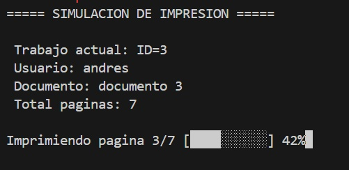
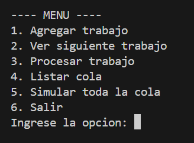
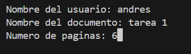
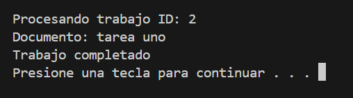
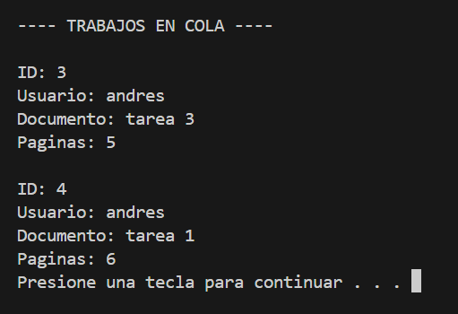
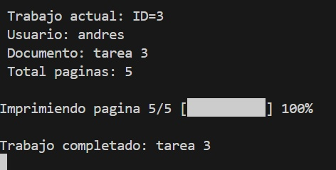
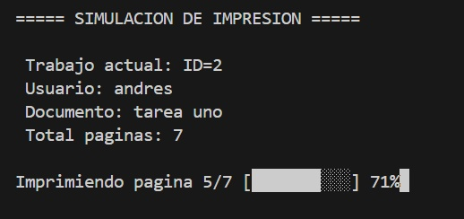

+++ date = '2026-02-16T18:06:38-08:00' draft = false title = 'Practica_1: Elementos basicos de los lenguajes de programacion' +++
En esta practica se enfoco en el desarrollo de un programa que simule la utilizacion de colas de impresion en lenguaje C. El programa se realizara en tres sesiones donde primero realizamos el programa utilizando memoria estatica, posteriormente en la sesion 2 migramos el programa a memoria dinamica atravez de listas enlazadas y finalmente en la sesion tres agregamos una obsion al memnu para crear una simulacion de proseso de impresion y mejorar el codigo
PrintJob_t es una estructura que representa un trabajo de impresión dentro del sistema. En ella se guardan todos los datos necesarios para identificar y procesar un documento que se enviará a la impresora.
Campos principales:
id: número único que identifica cada trabajo de impresión.
usuario: nombre de la persona que envió el documento a imprimir.
documento: nombre del archivo o documento que se va a imprimir.
paginas_totales: número total de páginas que tiene el documento.
paginas_restantes: número de páginas que todavía faltan por imprimirse. Este valor va disminuyendo conforme se procesa el trabajo.
copias: cantidad de copias que se desean imprimir.
prioridad: indica la importancia del trabajo (por ejemplo normal o alta).
estado: indica en qué situación se encuentra el trabajo, por ejemplo en cola, imprimiendo o completado.
La cola estatica se implementa un areglo de tamaño fijo por lo que los documento se agregan al final de la sola y se eliminas desde el frente, sus elementos principales son primer elemento, ultimo elemento y el tamaño de la cola
primer elemento -> [Trabajo1][Trabajo2][Trabajo3] <- ultimo elemento
cantidad = 3
mientras que el memoria dinamica se utilizan listas enlasadas por lo que sus principales componen tes son lso punteros que conenctan a los nodos, un puntero al ultimo nodo(cola) y un puntero al primer nodo(cabeza).
cabeza -> [Trabajo1] -> [Trabajo2] -> [Trabajo3] -> NULL
↑
cola
void inicializarCola(ColaDinamica *cola);
Esta funcion se encarga basicamente de crear la cola e inicializarla en cero (en caso de utilizar la memoria estatica) o apuntar a NULL (en caso de utilizar memoria dinamica), en otras palabras inicializa la cola vacia
int colaVacia(const ColaDinamica *cola);
esta funcion verifica que la lista este vacia y regresa 1 si es que esta vacia o cero si es que no lo esta, esta funcion, al contrario de la funcion de inicializar, no modifica a la cola, simplemente verifica que este vacia
void agregarTrabajo(ColaDinamica *cola,TrabajoImpresion trabajo);
al llamar a esta funcion agrega un trabajo a la cola y aumenta la cantidad de datos que tienen guardada, esta funcion tambien verifica si la el arreglo esta llego, de lo contrario agega una nuev tarea al final, tarea que el ususario ingresa dando le los datos de el titulo, autor y nuemro de paguinas. en el caso de la memoria dinamica tambien ajusta los punteros de la cola siguiente y anterior los cuales controla los nodos que se encuentran antes y despues del nuevo nodo.
void capturarDatos(ColaDinamica *cola, int siguiente_id);
La función capturarDatos se encarga de pedir al usuario la información de un trabajo de impresión, como el nombre del usuario, el documento y el número de páginas. Primero valida que los datos no estén vacíos o incorrectos. Después asigna algunos valores al trabajo, como su ID, estado, prioridad y páginas restantes. Finalmente intenta agregar el trabajo a la cola de impresión y muestra un mensaje indicando si se agregó correctamente o si la cola está llena.
En este caso se usa memoria estática, por otro lado, si se usara memoria dinámica, los trabajos se crean con malloc y se almacenan en listas enlazadas y colas dinámicas, haciendo que la cola crezca o disminuya en tamaño según sea necesario.
void verSiguienteTrabajo(const ColaDinamica *cola);
La función verSiguienteTrabajo muestra la información del primer trabajo en la cola de impresión. Primero verifica si la cola está vacía; si lo está, muestra un mensaje y termina. Si hay trabajos, obtiene el que está al frente de la cola y muestra sus datos principales como ID, usuario, documento y número de páginas. Al usar memoria dinámica, los trabajos se almacenan en nodos enlazados que se crean y eliminan durante la ejecución del programa
void procesarTrabajo(ColaDinamica *cola);
se encarga de atender el primer trabajo de la cola de impresión. Primero revisa si la cola está vacía; si lo está, muestra un mensaje y termina. Si hay trabajos, toma el que está al frente, muestra su ID y el documento que se está procesando. Después mueve el frente de la cola al siguiente nodo y libera la memoria del trabajo que ya se procesó usando free. Esto se hace porque la cola utiliza memoria dinámica, donde los nodos se crean y eliminan durante la ejecución del programa.
en caso de ser memoria estatica, es deci , que los trabajos se almacenen en un arreglo, simplemente los datos del arreglo de moveran y se disminuira el tamaño actual del arreglo reutilizando el espacio ya recervado
void listarCola(const ColaDinamica *cola);
atravez de una estructura de repeticion for, se imprimen todos los trabajos que esten guardados la lista o el arreglo dependiendo el tipo de memoria que utilice, imprimirndo los datos de cada uno de los nodos o indices, el id, nombre de ussuario, nombre del documento y nuemro de paginas, ovbiamente tambien verificando que no este vacia la lista o arreglo
void destruirCola(ColaDinamica *cola);
esta funcion solo se utiliza en la cesion dos para librerar la memori, esta funcion lo que hace es que con ayuda de una estructura de repeticion, se para nodo por nodo y se libera la memoria individualmente con el comando free() esto para librear el espacio de memoria que utilizava ya que en esa secion utilizamos memoria dinamica, la memoria dinamica requiere que liberemos la memoria manualmente con free() para no ener problemas
Alcance y Duracion
Dentro del codigo se utilizan diversas variables donde se pueden clasificar dependiendo el alcance de dichas variables, es decir en que parte y hasta donde son visibles y utilizables esas variables, por ejemplo:
en la funciones capturarDatos
void capturarDatos(ColaDinamica *cola, int *siguiente_id)
{
TrabajoImpresion trabajo;
char buffer[100];
printf("Nombre del usuario: ");
fgets(trabajo.usuario, sizeof(trabajo.usuario), stdin);
trabajo.usuario[strcspn(trabajo.usuario, "\n")] = '\0';
printf("Numero de paginas: ");
fgets(buffer, sizeof(buffer), stdin);
trabajo.paginas_totales = atoi(buffer);
if (trabajo.paginas_totales <= 0)
{
printf("Numero de paginas invalido\n");
return;
}
agregarTrabajo(cola, trabajo);
}
se utiliza la variable local buffer, la cual se considera local ya que esta varible fue declaada desntro de esta funcion asi que su alcance solamente se encuentra denro de la funcion y al momento de salir, los datos de la variable se pierde
por otro lado en el encavezado de la scesion 1
#include <stdio.h>
#include <string.h>
#include <stdlib.h>
#define MAX_USUARIO 32
#define MAX_DOCUMENTO 48
#define MAX_TRABAJOS 10
se definen tres variables globales (ya que estan fuera de cualquier funcion) las cuales tienen alcancce completo en todo el codigo y su valor no puede cambiar, y ademas es una buena practica el ponerlas en mayuscula
Memoria
Otro consepto muy importante utilizado en esta pactica es el stack el cual es la memoria que se usa para variables locales y parámetros de funciones. Se administra automáticamente por el programa. por ejemplo:
void capturarDatos(ColaDinamica *cola, int *siguiente_id)
{
TrabajoImpresion trabajo;
char buffer[100];
}
se utilia el stack para guardar informacion temporalmente y se libera automaticamente cuando sale de la funcion.
por otra parte tambien esta el HEAP. El heap es la memoria que se reserva dinámicamente durante la ejecución del programa.
Se usa cuando no sabemos cuánta memoria necesitaremos, se utilizan los comandos malloc(), calloc() y realloc()
Nodo *nuevo = (Nodo*) malloc(sizeof(Nodo));
y para liberar la memoria se utiliza el comado free()
subprogramas
Un subprograma es basicamente una funcion que realiza un conjunto de operaciones espesificas donde pueden o no regresar un valor y/o pedir parametros. en este punto es necesario saber que al mandar datos a una funcion se puede hacer de dos maneras, por valor o por referencias donde se envian por valor cuando se manda un numero o dato espesifico como por ejemplo:
int main()
{
int a = 5;
cambiar(a);
printf("%d", a);
}
donde al llamar a la funcion cambiar, se mana directamene la variable 'a' con un valor guardado.
por otro lado estan los parametros por referencias que al contratio que con los de valor aqui no se manejan valores si no que se envian referencias a dirrecciones de memoria a travez de punteros utilizando el simbolo '&'.
int main()
{
int a = 5;
cambiar(&a);
printf("%d", a);
}
El tipo de parámetro que se utilice depende de lo que se quiera lograr con la función. Cuando un parámetro se pasa por valor, la función recibe una copia del dato original, por lo que cualquier modificación realizada dentro de la función solo afecta a esa copia y no a la variable original. Esta copia existe únicamente durante la ejecución de la función.
Por otro lado, cuando un parámetro se pasa por referencia, la función recibe la dirección de memoria de la variable, lo que permite modificar directamente su valor original. Por esta razón, cuando se desea que una función cambie el valor de una variable fuera de ella, se utiliza el paso de parámetros por referencia.
En la sesión 3 se agregó una nueva opción al menú que permite generar una simulación del procesamiento de los documentos en la cola de impresión. Esta simulación muestra cómo se van procesando las páginas de cada documento utilizando pequeñas animaciones en la terminal.

La imagen anterior muestra una captura del programa en funcionamiento dentro de la opción de simulación. En esta función se simula el procesamiento de cada página del documento, mostrando en pantalla los datos principales del trabajo de impresión, como el ID, el nombre del usuario, el nombre del documento y el número total de páginas.
Además, mediante una barra de progreso se representa visualmente el avance de la impresión, procesando las páginas una por una. El sistema comienza siempre con el primer documento que fue agregado a la cola, siguiendo el orden en que los trabajos fueron ingresados.
En programación existen diferentes formas de administrar la memoria para almacenar datos. Dos de las más comunes son la memoria estática y la memoria dinámica. La memoria estática se caracteriza por tener un tamaño fijo que se define antes de que el programa se ejecute. Este tipo de memoria se reserva desde el inicio del programa y permanece disponible durante toda su ejecución. Cuando se trabaja con memoria estática normalmente se utilizan arreglos, ya que estos requieren que su tamaño sea especificado previamente. Debido a esto, la cantidad de elementos que se pueden almacenar es limitada y no puede cambiar mientras el programa está en funcionamiento. Aunque esta forma de manejo de memoria es más simple y fácil de implementar, también puede generar limitaciones, ya que si se necesita almacenar más datos de los previstos no será posible sin modificar el tamaño del arreglo en el código. Sin embargo, su principal ventaja es que su manejo es más sencillo ya que el acceso a los datos del arreglo se puede acceder directamente atravez del indice y no requiere reservar ni liberar memoria manualmente durante la ejecución del programa.
Por otro lado, la memoria dinámica no requiere un tamaño fijo, ya que puede cambiar durante la ejecución del programa conforme se agregan o eliminan datos. En este tipo de administración de memoria es común utilizar listas enlazadas, las cuales están formadas por nodos que se conectan entre sí mediante punteros. Cada nodo almacena cierta información y una referencia al siguiente nodo de la lista, lo que permite que la estructura pueda crecer o reducirse según sea necesario. Gracias a esto, la memoria se utiliza de una forma más flexible y eficiente, ya que solo se reserva el espacio que realmente se necesita en cada momento. Sin embargo, su manejo suele ser un poco más complejo, porque es necesario reservar y liberar memoria manualmente durante la ejecución del programa. Al utilizar memoria dinámica es necesario el uso de funciones como malloc(), calloc(), realloc() y free(), las cuales permiten reservar, modificar o liberar espacio en memoria durante la ejecución del programa. Estas funciones son fundamentales cuando se trabaja con estructuras de datos dinámicas como listas enlazadas, pilas o colas, ya que permiten administrar la memoria de manera flexible según las necesidades del programa.
| Característica | Memoria estática | Memoria dinámica |
|---|---|---|
| Tamaño | Fijo | Variable |
| Estructura común | Arreglos | Listas enlazadas |
| Uso de memoria | Se reserva al inicio | Se asigna durante la ejecución |
| Manejo | Más sencillo | Más flexible |
Menu Principal

agregar tarea

Procesar trabajo

Listar Cola

simular toda la cola


En conclusión, el tipo de almacenamiento de memoria dependerá de la flexibilidad que necesitemos para nuestro programa. Si la cantidad de datos siempre es la misma, es más conveniente utilizar memoria estática, ya que su tamaño se define desde el inicio del programa y facilita el acceso a los datos a través de índices. Esto permite una implementación más sencilla y un manejo más directo de la información.
Sin embargo, si se necesita que la memoria se ajuste a una cantidad variable de datos, es más conveniente utilizar memoria dinámica, ya que permite reservar o liberar memoria durante la ejecución del programa. De esta forma, el tamaño de la memoria puede adaptarse según las necesidades del programa, lo que resulta útil cuando no se conoce con anticipación la cantidad exacta de datos que se van a manejar.
GeeksforGeeks. (2024). Queue data structure. GeeksforGeeks. https://www.geeksforgeeks.org/queue-data-structure/
GeeksforGeeks. (2024). Dynamic memory allocation in C using malloc, calloc, free and realloc. GeeksforGeeks. https://www.geeksforgeeks.org/dynamic-memory-allocation-in-c-using-malloc-calloc-free-and-realloc/
Tutorialspoint. (2024). Data structures – queues. TutorialsPoint. https://www.tutorialspoint.com/data_structures_algorithms/dsa_queue.htm
Programiz. (2024). C dynamic memory allocation. Programiz. https://www.programiz.com/c-programming/c-dynamic-memory-allocation